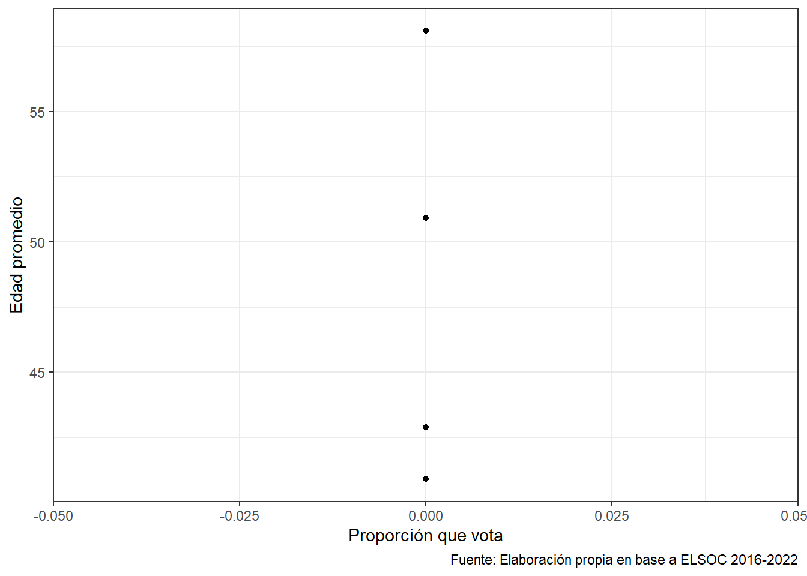
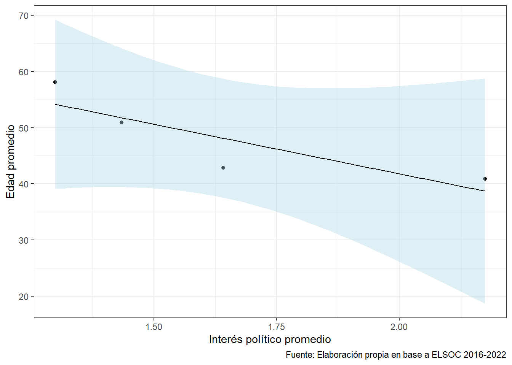

Nivel educativo y desafección: estudio sobre el interés político en Chile.
R para el Análisis de datos sociales 2026
Introducción.
El siguiente trabajo trabaja el tema de cómo la influencia de la trayectoria educativa afecta en la configuración del interés político, la percepción de las instituciones y la participación electoral en Chile. Para este trabajo se utiliza la base de datos de ELSOC.
Planteamiento del problema.
En las últimas décadas, la democracia chilena ha transitado por un escenario de transformaciones estructurales que han puesto en evidencia una profunda desconexión entre la ciudadanía y sus instituciones. Este fenómeno, el cual es definido como una encrucijada conceptual (Mardones A. 2014), sugiere que la desafección política no es un evento azaroso, sino que es un proceso arraigado en la estructura social. En este contexto, el nivel educativo emerge como una variable crítica para entender por qué ciertos sectores de la población mantienen un interés activo en la esfera pública, mientras que otros se repliegan hacia la apatía.
El problema central radica en que la desigualdad educativa en Chile se traduce en una desigualdad de capacidades políticas. Si el sistema educativo no logra dotar a los ciudadanos de las herramientas necesarias para procesar la complejidad del sistema, la democracia corre el riesgo de volverse excluyente. Por lo tanto, este trabajo busca examinar cómo la experiencia educativa moldea el interés político, actuando como el principal predictor de la integración o alineación del ciudadano/a respecto al poder político nacional.
Hipótesis.
El nivel educativo alcanzado por las y los ciudadanos chilenos actúa como un determinante del interés político, el cual es mediado por el desarrollo de la eficacia política. Se postula que una mayor trayectoria académica fortalece las capacidades cognitivas para comprender el sistema, aumentando la eficacia política interna; este sentimiento de competencia es el que finalmente impulsa una mayor participación electoral y reduce la desafección institucional (Mackenna 2015).
Variables.
Para continuar la investigación, pasaré a describir el conjunto de variables a utilizar.
Descripción de variables.
Para este trabajo, se seleccionaron las variables:
- Nivel educacional (m01): variable de tipo ordinal que mide el nivel educacional alcanzado por el encuestado. La pregunta utilizada en la encuesta es: ¿Cuál es tu nivel educacional?. Las categorías reflejan una progresión jerárquica de menor a mayor nivel de estudios, lo que permite ordenar a los individuos según su trayectoria académica. Esta es la variable independiente principal de este estudio, ya que da cuenta del capital educativo de los individuos.
- Interés en la política (c13): variable de tipo ordinal que mide el grado de interés del encuestado en la política. La pregunta utilizada es: ¿Qué tan interesado está usted en la política?. Sus categorías reflejan distintos niveles de interés, desde bajo a alto. Esta variable representa una dimensión subjetiva del involucramiento político, vinculada a la disposición de los individuos a informarse y participar en asuntos públicos.
- Frecuencia de información política (c14_02): variable de tipo ordinal que mide la frecuencia con la cual el encuestado se informa sobre política a través de distintos medios. Su pregunta es: ¿Con qué frecuencia se informa sobre política?. Esta variable representa una dimensión conductual del involucramiento político, en tanto da cuenta de prácticas concretas de consumo de información política.
- Participación electoral (c11): variable nominal que mide si el encuestado participó en la última elección. A partir de esta podemos distinguir entre quienes votaron y quienes no. Esta variable representa una medida concreta de comportamiento político, a diferencia de otras variables que capturan actitudes o percepciones. Esta es la variable dependiente principal de este estudio.
- Participación política no electoral (c07_02): variable de tipo ordinal que mide la participación del encuestado en actividades políticas distintas del voto, como la asistencia a reuniones o instancias de discusión pública. La pregunta utilizada es: ¿Ha participado en reuniones sobre temas de interés público?. Esta variable representa una dimensión ampliada de la participación política, que va más allá del acto electoral.
- Edad (m0_edad): variable de tipo de razón que mide la edad del encuestado en años cumplidos. La variable representa una característica sociodemográfica estructural que influye en el comportamiento político, dado que distintos grupos etarios presentan patrones diferenciados de participación e interés en la política.
- Confianza en partidos políticos (c05_02): variable de tipo ordinal (variable de intervalo) que mide el nivel de confianza del encuestado en los partidos políticos. Representa una dimensión de la relación entre los ciudadanos y las instituciones políticas, particularmente en término de legitimidad y confianza. Su relevancia para este estudio es que permite agregar la dimensión de de desafección institucional, la cual es relevante para la hipótesis planteada.
Análisis.
Los resultados presentes en Tabla 1 muestran la distribución de la participación electoral en la muestra analizada. Se observa la proporción de individuos que declararon haber votado en la última elección en comparación con aquellos que no participaron. Esta variable permite identificar el nivel general de involucramiento electoral en la población estudiada.
En términos analíticos, esta distribución constituye un punto de partida para evaluar la hipótesis de investigación, ya que permite observar el comportamiento político efectivo de los individuos. En este sentido, la participación electoral se configura como una variable clave para analizar si factores como el nivel educacional y el interés político inciden en la probabilidad de votar.
| Votó en última elección | n | Proporción (%) |
|---|---|---|
| No | 931 | 32.44 |
| Sí | 1939 | 67.56 |
| a Fuente: Elaboración propia en base a ELSOC 2016-2022 |
La distribución del nivel educacional presente en Tabla 2 muestra la composición de la muestra en términos de trayectoria académica. Se identifican distintas categorías que reflejan niveles crecientes de educación formal.
Esta variable resulta central para el análisis, ya que permite evaluar diferencias en el comportamiento político según el capital educativo de los individuos. Desde la perspectiva teórica adoptada, se espera que mayores niveles educacionales se asocien con un mayor interés en la política y, consecuentemente, con mayores niveles de participación electoral.
| Nivel educacional | n | Proporción (%) |
|---|---|---|
| Básica | 351 | 12.23 |
| Media | 673 | 23.45 |
| Técnica | 937 | 32.65 |
| Universitaria | 909 | 31.67 |
| a Fuente: Elaboración propia en base a ELSOC 2016-2022 |
Los estadísticos descriptivos visualizados en Tabla 3 permiten caracterizar la muestra en términos de edad y nivel de confianza en los partidos políticos. En particular, el promedio y la mediana de la edad entregan información sobre la distribución etaria de los encuestados, mientras que la desviación estándar permite observar la dispersión de estos valores.
Por su parte, los indicadores de confianza en los partidos políticos permiten aproximarse a la relación entre los ciudadanos y las instituciones políticas. Esta dimensión es relevante para el análisis, ya que niveles más altos de desconfianza podrían asociarse a menores niveles de participación política.
| Edad promedio | Edad mediana | Edad SD | Confianza promedio | Confianza mediana | Confianza SD |
|---|---|---|---|---|---|
| 46.00244 | 46 | 15.24741 | 1.386411 | 1 | 0.6814962 |
| a Fuente: Elaboración propia en base a ELSOC 2016-2022 |

Relación entre nivel educacional y participación electoral
En Figura 1 muestra una asociación entre el nivel educacional y la participación electoral, medida como la proporción de individuos que declaran haber votado. Se observa una tendencia positiva: a medida que aumenta el nivel educacional, también lo hace la proporción de personas que participan en elecciones.
Esta relación sugiere que la educación podría estar vinculada al desarrollo de recursos cognitivos y cívicos que facilitan la comprensión del sistema político y la toma de decisiones electorales. Asimismo, los niveles más altos de educación tienden a concentrarse en individuos con mayor edad promedio, lo que también podría influir en mayores niveles de participación, dado que la edad ha sido identificada como un factor relevante en el comportamiento electoral.
En términos de la hipótesis planteada, estos resultados son consistentes con la idea de que una mayor trayectoria educativa contribuye indirectamente a una mayor participación política, posiblemente mediada por variables como la eficacia política.
`geom_smooth()` using formula = 'y ~ x'

Relación entre nivel educacional e interés político.
El Figura 2 evidencia una relación positiva entre el nivel educacional y el interés político promedio. Los grupos con mayor nivel educativo presentan, en promedio, mayores niveles de interés en la política, lo que sugiere que la educación no solo influye en comportamientos observables como el voto, sino también en dimensiones actitudinales.
Este patrón puede interpretarse como resultado del fortalecimiento de habilidades cognitivas asociadas a la educación, las cuales permiten una mejor comprensión de los procesos políticos, aumentando así el involucramiento subjetivo con estos temas. Además, el interés político es un componente clave de la eficacia política interna, entendida como la percepción de competencia para participar en política.
En relación con la hipótesis, este hallazgo es especialmente relevante, ya que respalda el mecanismo teórico propuesto: la educación incrementa el interés político, lo que a su vez podría fortalecer la eficacia política y, finalmente, traducirse en mayores niveles de participación electoral.

Conclusión.
Para concluir, podemos decir que ambos gráficos sugieren que el nivel educacional no solo se asocia con comportamientos políticos concretos, como la participación electoral. Sino también se asocia con disposiciones subjetivas como el interés político, lo que refuerza su rol como un determinante central en la configuración de la relación entre ciudadanía y política.
Referencias
Mackenna, Bernardo. 2015. «Composición del electorado en elecciones con voto obligatorio y voluntario: un estudio cuasi experimental de la participación electoral en Chile». Revista Lationamericana de Opinión Pública vol 5 (junio). https://hdl.handle.net/10366/142679.
Mardones A., Roberto. 2014. «La encrucijada de la democracia chilena: una aproximación conceptual a la desafección política.» Pap.polit. 19 (1): 3959. https://doi.org/10.11144/Javeriana.PAPO19-1.edca.
Muñoz-Labraña, Carlos, Rosendo Martínez-Rodríguez, y Carlos Muñoz-Grandón. 2016. «Perceptions of Students about Politics, Political Parties and Individuals Devoted to Politics when Ending High School Education in Chile». Rev. Electr. Educare 20 (1): 116. https://doi.org/10.15359/ree.20-1.17.